地政学
アムリトサルはパキスタン国境に近く、ラホールとの近さと分断後の閉ざされた線を同時に抱えます。国境式典、軍事緊張、交易期待が街の方角を決めます。巡礼都市でありながら、外交の温度を日常が受ける場所です。
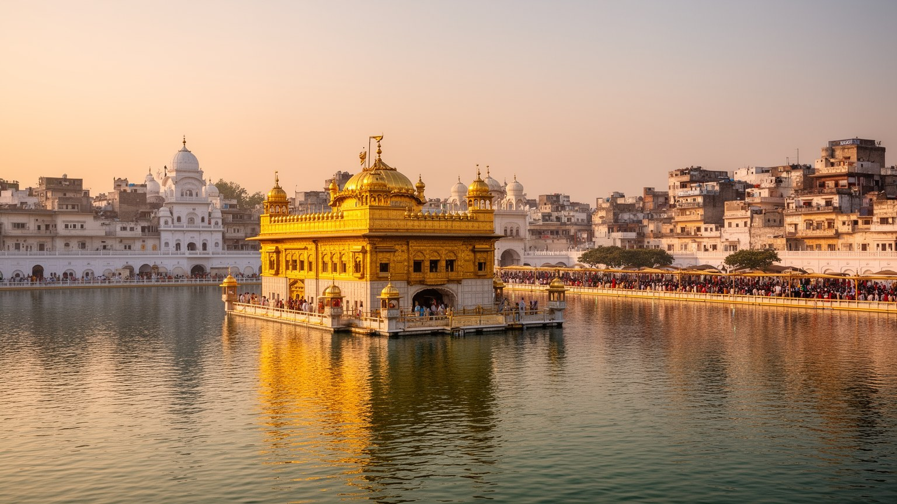
🇮🇳 インド / アジア / World City Atlas
黄金寺院の巡礼、パンジャーブの農業、分割の記憶、国境の儀礼、市場と食が重なり、信仰と日常が濃く交差する北西インドの聖地。
都市の骨格
旧市街の巡礼路、郊外へ続く農村、ラホールへ向かう歴史軸が近く、宗教都市でありながら国境政治と生活経済を強く映します。
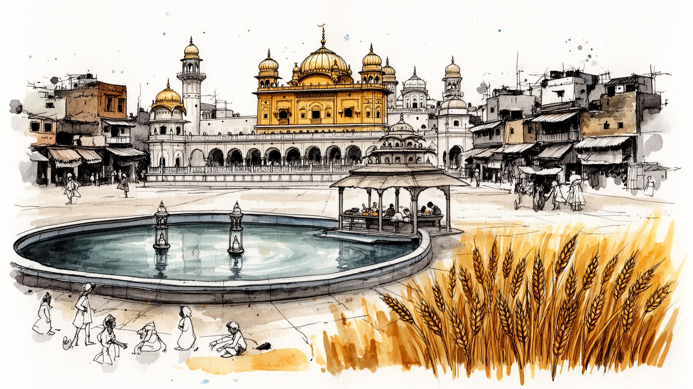
アムリトサルはパキスタン国境に近く、ラホールとの近さと分断後の閉ざされた線を同時に抱えます。国境式典、軍事緊張、交易期待が街の方角を決めます。巡礼都市でありながら、外交の温度を日常が受ける場所です。
繊維、食品加工、観光、工芸、小売、農産物流通が雇用を支え、周辺農村の小麦や乳製品とも結びつきます。家族経営の店、宿、食堂、運転手、職人の仕事が街を動かし、非正規の働き手も多いです。若者の移住も焦点です。
黄金寺院はシク教徒の祈り、音楽、奉仕、食の共有を世界へ開く中心です。旧市街にはヒンドゥー寺院、モスク、教会、パンジャーブ語の芸能や服飾も重なり、信仰は生活の礼節を育てます。祭礼も街を結び直す力になります。
朝の巡礼、ラッシーやクルチャの食堂、布地市場、狭い路地、学校、病院、国境への日帰り観光が生活圏を作ります。聖地の静けさと商いの熱気が近く、住民は来訪者の波とともに暮らす街です。暑さと霧も日課を変えます。
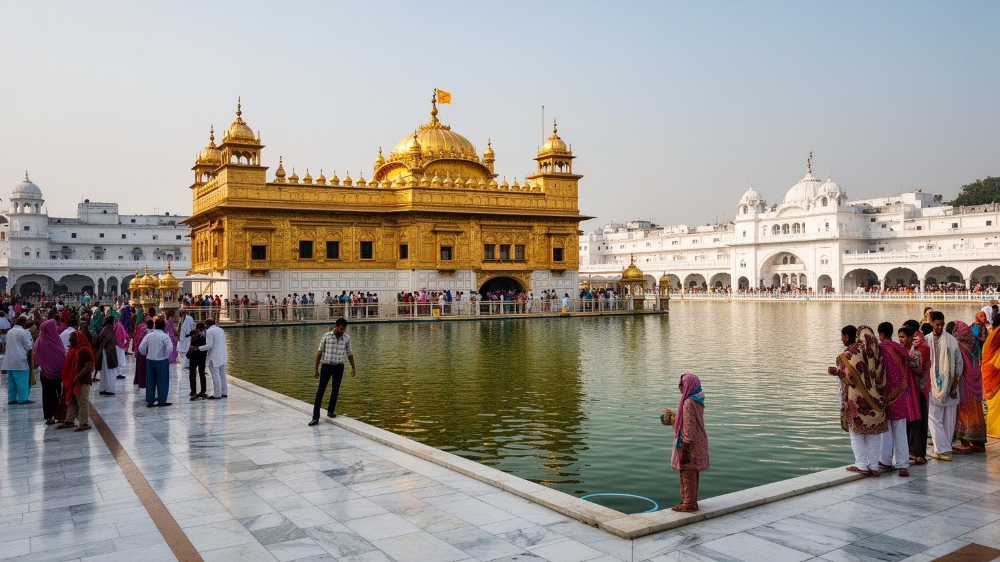
アムリトサルの中心を決めているのは、黄金寺院として知られるハリマンディル・サーヒブです。聖池を囲む回廊、グルバニの響き、頭を覆って歩く参拝者、昼夜を問わず続く祈りは、都市の時間を商業や交通だけでは測れないものにします。寺院は観光名所である前に、シク教徒にとって平等、奉仕、記憶を確認する場であり、海外のパンジャーブ系家族が婚礼、帰省、子どもの命名、祖父母への付き添いを通じて故郷感覚を結び直す場所でもあります。共同食堂ランガルでは、身分や国籍を問わず同じ床に座って食事を受け、調理、配膳、清掃は多くの奉仕者に支えられます。周辺では靴預かり、無料の水、迷子対応、巡礼者向けの宿、薬局、宗教書店、写真店が細かな安心を作り、聖地は社会福祉と街路経済の入口にもなります。早朝の清掃、夜の灯明、聖典を運ぶ行列、香辛料と湿った大理石の匂いは、住民にも訪問者にも敬意の作法を求めます。祭礼期には子どもの手を引く家族や歩行の遅い高齢者が増え、警備、給水、休憩、医療の細部が信仰の質を支えます。周囲の放送や口伝えの案内も、人の波を穏やかに整えます。音もまた都市の道案内です。一方で、混雑、衛生、騒音、商業化への配慮は欠かせません。祈りの空間が常に開かれていることは都市に安心を与える一方、管理する人びとには絶え間ない責任を求めます。
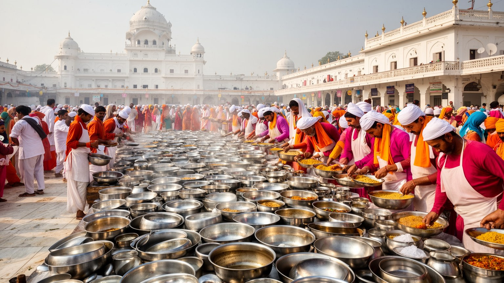
アムリトサルで信仰が最も具体的に見える場所の一つが、黄金寺院のランガルです。巨大な厨房では小麦粉をこね、豆を煮込み、皿を洗い、床を拭き、年齢も国籍も異なる人が同じ食事を受けます。列に並ぶ巡礼者、観光客、地元住民、貧しい人、海外から戻った家族、学校の団体が同じ床に座る経験は、シク教の平等の理念を身体で理解させます。運営は精神性だけでは続きません。寄付、穀物、燃料、水、衛生管理、廃棄物処理、混雑整理、熱い調理場で働く奉仕者の安全が欠かせず、都市の食料流通、農村の小麦、乳製品店、商店の供給、清掃労働も背後にあります。大量調理の金属音、湯気、ロティが手渡される速さ、子どもに皿を渡す祖母の声は、祈りを生活の手仕事へ変えます。ランガルは観光の付属物ではなく、都市が他者をどう迎えるかを示す制度であり、飢え、孤独、階層差に対する実践的な応答でもあります。奉仕の経験は地域の情報網にもなり、病院、宿、帰りの列車、迷った高齢者の相談が自然に交わされます。近隣の学校や団体が奉仕を学ぶ場にもなり、若者は皿洗いや配膳を通じて公共性を身体で覚えます。残食を減らす声かけや水を大切に使う作法も、日々の教育として働きます。食後の静かな片付けにも、共同体の呼吸があります。食卓を支える秩序を見れば、都市の包容力が理念だけではないことが分かります。
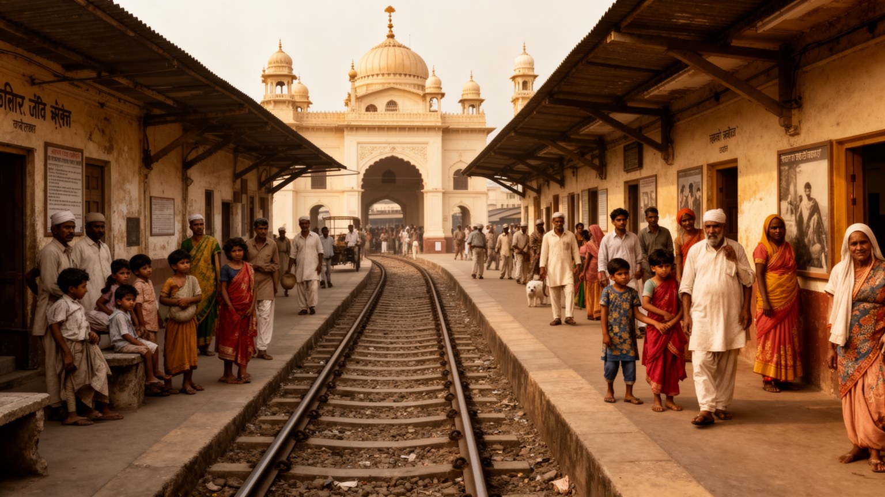
アムリトサルの近現代史を語る時、インド・パキスタン分離独立の記憶は避けて通れません。パンジャーブは国境で分けられ、多くの人が宗教共同体の線に沿って移動を迫られ、列車、村、道路、市場で深刻な暴力が起きました。都市には難民として到着した家族、失われた家屋や土地、向こう側に残した墓や聖地、言葉では語りにくい沈黙が重なっています。分割博物館や記念の場は、国家誕生の物語だけでなく、普通の人びとの移動、恐怖、再出発を伝える役割を持ちます。市場や住宅地には、分割後に築かれた商売、親族ネットワーク、学校への投資、結婚紹介、同郷会の情報網が残り、喪失の記憶は生活再建の歴史にも変わってきました。ジャリアンワーラー・バーグの虐殺記憶もまた、植民地支配への抵抗と市民の犠牲を街に刻みます。家族の証言、古い写真、移動の荷物、子どもへ語り継がれる地名は、大きな政治史を個人の手触りへ戻します。地元紙、学校の歴史授業、記念日の式典、家庭の食卓での短い会話は、沈黙しがちな記憶を次世代へ渡す回路になります。博物館の静けさと外の市場の喧騒が近いことも、この街らしい記憶の重なりです。訪問者が国境式典の熱気を楽しむ時にも、その背後に高齢者の沈黙や家族史の痛みがあることを忘れない姿勢が必要です。記憶を尊重することは、被害を競わせず、複数の共同体が受けた傷を丁寧に聞く態度でもあります。
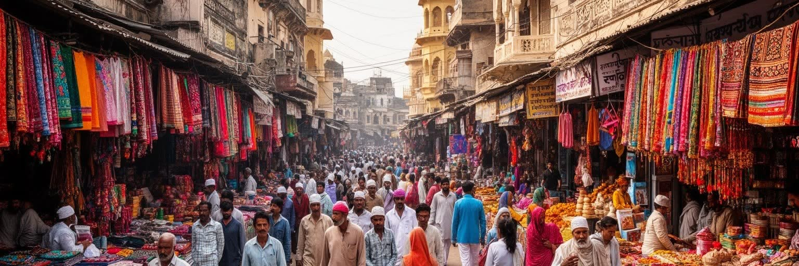
アムリトサルの旧市街は、門、路地、バザール、宗教施設、住居が近接する高密度の都市空間です。黄金寺院へ向かう歩行者の流れは、布地、腕輪、菓子、宗教用品、香辛料、履物、屋台を並べた商店街を通り、祈りと買い物が一つの動線に重なります。自動車が入りにくい細い道では、歩行者、リキシャ、バイク、荷運び、露店の台車が互いに調整し、都市の速度は大通りよりも人の身体に近いです。旧市街の魅力は歴史的な外観だけではなく、店主の呼び声、揚げ油とチャイの匂い、朝の清掃、上階の洗濯物、祭礼の日の太鼓と混雑にあります。再整備された巡礼路は歩きやすさを高めますが、観光向けの均質な景観が増えれば、古い商売や住民の生活が見えにくくなります。門の内側と外側では地価、客層、移動手段が変わり、わずかな距離が商売の成否を分けます。巡礼路の明るい舗装の裏側には、荷物搬入、排水、家賃、相続、消防、屋台許可をめぐる日々の調整があります。子どもは店番を手伝いながら通学し、高齢者は常連客や近所の噂をつなぐ記憶の窓口になります。小さな修理屋や露天商も、巡礼者の忘れ物や急な買い物を受け止めます。夜に店が閉まった後も巡礼者の足音、清掃の音、宿を探す旅行者の会話が残り、旧市街は完全には眠りません。保存は街を凍結することではなく、住む人が働き続けられる条件を整えることに近いです。
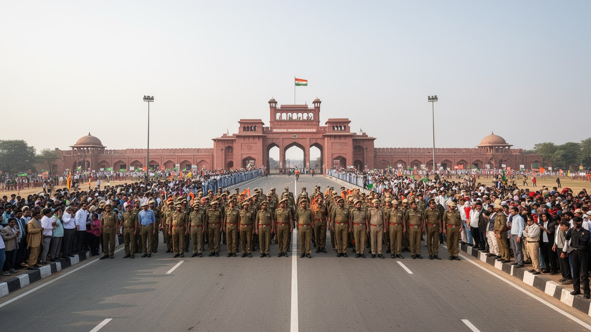
アムリトサルはインド北西部の平野にあり、ワガ・アタリ国境を越えればラホールが遠くありません。歴史的にはパンジャーブの文化圏と交易路の一部であり、言語、食、音楽、家族の記憶は国境線だけでは切り分けられません。しかし一九四七年の分離独立は、移住、暴力、喪失を都市の記憶に刻み、かつて近かった都市同士を厳しい管理の下に置きました。今日の国境式典は観光客を集める劇場的な儀礼であり、旗、行進、歓声、観客席の応援が国家の存在を強く示します。同時に、その熱気の背後には軍事緊張、ビザの制限、交易の不安定さ、家族や信仰の移動の難しさがあります。道路や鉄道、空港の整備は人の流れを広げますが、政治情勢が変われば物流、ホテル予約、旅行会社、運転手、農産物の運送はすぐ影響を受けます。式典へ向かう観光バスの歌声、土産物の露店、検問、駐車場は国家の境界を日常の商いに変えます。平和への期待が高まる時、アムリトサルはラホールとの文化的近さを思い出す場所になり、緊張が高まる時には前線に近い都市として身構えます。パンジャーブ音楽や食の近さを知る住民ほど、境界の硬さを日々の矛盾として感じます。夕方の応援と軍靴の音は、娯楽と緊張を同時に響かせます。地政学は遠い首都の外交だけではなく、学校旅行、商店の仕入れ、親族訪問、訪問者の不安にまで及びます。
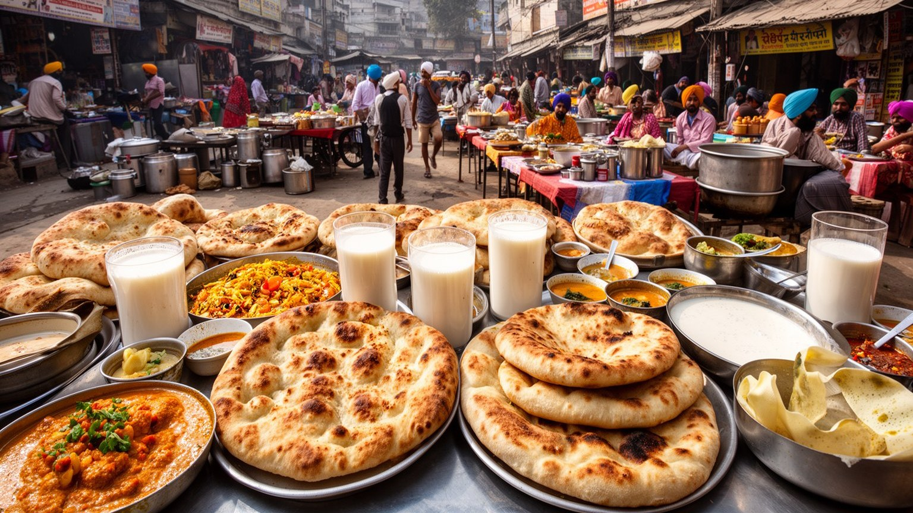
アムリトサルの食文化は、パンジャーブの豊かな農業、シク教の共同食、旧市街の商い、家族の外食習慣が結びついています。アムリトサリ・クルチャ、チョーレ、ラッシー、魚料理、ピンニ、ハルワ、濃いチャイは、観光客の名物であると同時に、朝食、祝い、巡礼の合間、買い物帰りの休息に食べられる日常の味です。バターや乳製品の豊かさは農村圏とのつながりを示し、香辛料の配合やタンドールの焼き加減は店ごとの誇りになります。ホール・バザールやカトラの周辺では、布地、靴、宗教用品、ドライフルーツ、甘菓子を選ぶ買い物客が食堂に流れ、値段や評判は家族、運転手、スマートフォンの地域グループを通じて広がります。街の人気店では行列ができ、調理人、配膳係、皿洗い、配達員、乳製品業者、農家が一皿の背後にいます。食の観光化は収入を生む一方、価格上昇や店の入れ替わり、過度な演出を招くこともあります。旅行者が名店だけを急いで巡ると、家庭の味、季節の野菜、断食や祭礼に合わせた食べ方を見落としやすいです。結婚式やバイサキの時期には甘い香りと音楽が路地へ広がり、食は祝祭と買い物を結びます。食堂の衛生改善、廃棄物処理、長時間働く調理場の安全は、評判を守る都市政策でもあります。アムリトサルの食卓は、信仰、農業、商売、もてなしを一口でつなぐ都市の入口です。
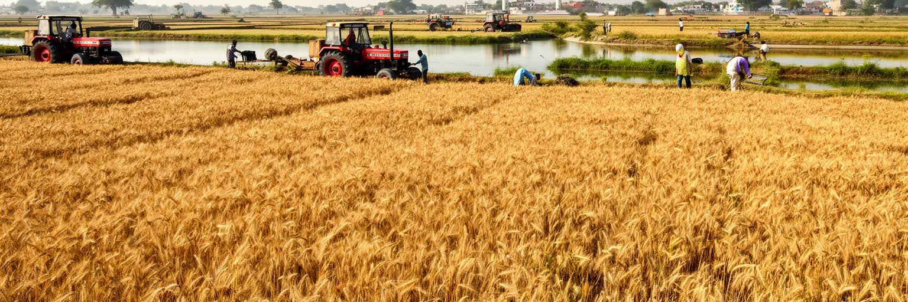
アムリトサルは宗教都市であると同時に、パンジャーブの農村経済と深く結びつく市場都市です。周辺には小麦、米、乳製品、野菜を生む農地が広がり、緑の革命以降の灌漑、機械化、肥料、政府買い上げ制度は農家の収入と都市の消費を支えてきました。穀物市場、倉庫、運送業、食品加工、乳製品店、農機具販売、銀行、学校、塾は、農村の季節変動を都市の仕事へ変換します。豊かな農業イメージの一方で、地下水の低下、単一作物への依存、農家債務、若者の移住希望、気候変動による不安も大きいです。農業抗議運動が示したように、パンジャーブの農家は単なる供給者ではなく、政策と尊厳をめぐる政治的な主体でもあります。収穫期には農村から都市へ現金と人の流れが強まり、結婚式、教育費、巡礼、金製品や布地の買い物、子どもの入学準備の需要も増えます。農地を継ぐか、都市や海外で働くかという選択は、多くの家族の将来設計を左右します。工場、修理工房、輸送会社で働く若者も多く、農村だけで生活を完結できない現実が街に出ています。女子教育や英語塾への投資も、海外就労への期待と結びつきます。市場の値札、トラックの混み方、地元紙や携帯メッセージで流れる価格情報は、周辺村落の収穫と家計の状態を映す指標になります。聖地の賑わいも農村圏の購買力に支えられている地域社会です。
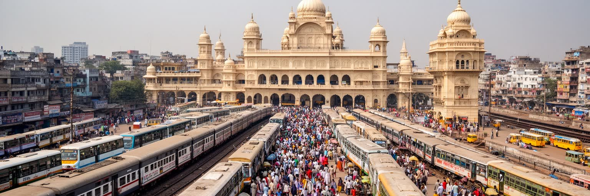
アムリトサルの観光は、黄金寺院、ジャリアンワーラー・バーグ、分割博物館、旧市街の市場、ワガ・アタリ国境式典を結ぶ動線で成り立ちます。市内には鉄道駅、空港、長距離バス、オートリキシャ、タクシー、徒歩の巡礼路が重なり、訪問者は短い滞在でも聖地、記憶、国境、食を経験できます。動線の便利さは都市に収入をもたらしますが、混雑、交通事故、客引き、廃棄物、宿泊料金の変動、住民の静けさへの影響も生みます。空港は海外のパンジャーブ系住民や巡礼者を結び、鉄道は国内の旅行者、商人、学生を運びます。国境式典への半日ツアーは人気ですが、国家の演出を楽しむだけでなく、分割と軍事化の背景を理解する旅でありたいです。巡礼の高齢者、子ども連れの家族、外国人旅行者、地元の通勤者が同じ狭い道を使うため、歩行空間、案内、休憩所、救急対応、女性が安心して移動できる仕組みの質が都市の印象を左右します。夜の黄金寺院を見たい人、早朝の礼拝へ向かう人、昼に国境へ出る人では必要な交通が違います。口コミ、運転手の連絡網、ホテルの案内、地域ニュースは、混雑や通行止めを伝える実用的な情報網になります。土産店、写真サービス、屋台、荷物預かりの小さな仕事も観光の波に左右されます。観光と巡礼は完全には分かれず、同じ人が祈り、買い物し、記憶の施設を訪れ、食堂で休みます。
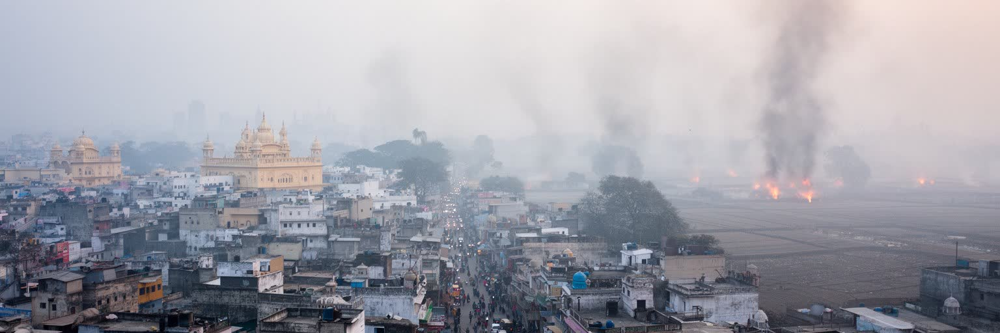
アムリトサルの日常を語る時、聖地の輝きだけでなく大気の重さも見なければなりません。パンジャーブ平野では冬の気温逆転、交通排出、建設粉じん、発電や燃料利用、周辺農地の野焼き、祭礼や結婚式の煙が重なり、霧と汚染が視界を狭める日があります。朝の通学、クリケットやカバディで遊ぶ子ども、巡礼者の移動、屋台の営業、リキシャ運転手、屋外で働く警備員や清掃員の健康は、大気の状態に左右されます。観光客は黄金寺院の夜景や国境式典を目当てに来ますが、住民にとっては咳、目の痛み、ぜんそく、医療費、洗濯物の汚れ、飛行機や列車の遅れが現実になります。農業の残さ処理を単純に責めるだけでは負担は解けません。農家には時間、費用、機械、作付け制度の制約があり、都市側にも公共交通、道路管理、廃棄物、建設規制の責任があります。空気を改善するには、農村政策、都市交通、燃料転換、緑地、医療情報、学校の休校判断、高齢者への注意喚起を同時に考える必要があります。薬局や医師、地域ニュース、家族のメッセージは、その日の外出判断を助ける生活情報になります。聖池が澄んで見える日も、冬の薄い太陽に霞む日も、同じ都市の姿です。大気汚染は景観の問題ではなく、働く人の肺、子どもの学習、高齢者の外出、観光都市としての信頼にかかわる社会的な焦点です。見えない空気が、移動と学びを左右します。
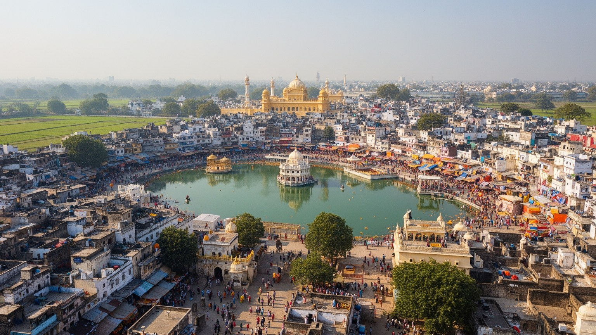
アムリトサルは、黄金寺院の美しさだけで完結する都市ではありません。シク教の巡礼と奉仕、パンジャーブ農業、旧市街の商売、分割の記憶、国境式典、食文化、海外ディアスポラ、若者の移住希望が同じ街路に重なっています。聖池の静けさと市場の呼び声、共同食堂の平等と商業観光の競争、国家儀礼の熱気と家族史の痛みは、互いに矛盾しながら都市の厚みを作ります。住民にとって都市は観光舞台ではなく、仕事、祈り、学校、大学、塾、家族、病院、気候への対応を毎日続ける生活の場です。昼は制服姿の子どもや市場の荷運びが路地を動き、夕方には公園や広場でクリケット、カバディ、散歩が始まり、夜はパンジャーブ音楽、結婚式の演奏、ラジオや地域動画が街の情報を運びます。訪問者に求められるのは、聖地の礼儀を守り、食を楽しみ、記憶の場所で立ち止まり、国境の演出を批判的にも温かくも読む姿勢です。都市の価値は、壮麗な写真だけでなく、無料の食事を支える奉仕、分割の証言を聞く静けさ、路地で働く職人、農村から届く穀物、海外へ向かう若者の不安にも宿ります。高齢者の語り、子どもの通学、店先の値段交渉、夜の音楽まで含めて初めて、この都市の全体像が見えます。アムリトサルを一つの聖地、一つの国境都市、一つの食の名所に縮めると、その倫理と複雑さを見失います。